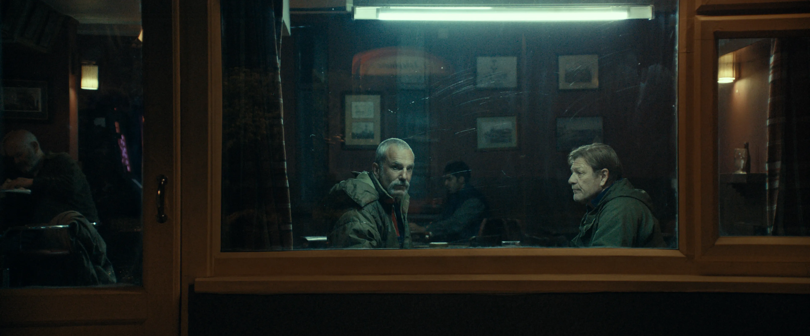

The film Anemone directed by Ronan Day-Lewis starrs Daniel Day-Lewis, a known great retired actor. The narrative of the film explores the relationship between a father and son through metaphorical perception and beautiful cinematography.
I absolutely adored the way this film was shot and the soundtrack. The way the establishing shots placed the viewer in the film with the actors. After looking up reviews, the film recieved heavy backlash due to the slow progression. Although I personally thought it accurately captured the struggle of fighting oneself. It is a slow moving process, if the father all of a sudden forgave himself with no pause then it would've felt almost like ingenuine pain. The fact that he had to close himself up, reflect, fight out his anger, and cry strongly depicts the emotions we face when struggling with pent up anger, regret, or guilt. He knew he couldn't have moved on and faced his son without coming to terms with his actions first.
House in the Middle of Nowhere
My dad grew up in Monjas Guatemala, his dream was to always go back to Guatemala and own a house hours away from the city. He wanted to grow his own fruits and vegetables, hunt for his food, and connect with nature. The film reminded me much of his dream since the actions from the actor were very similar to that of my dad's.
Dancing in the Kitchen
The scene where the brothers were dancing in the kitchen reminded me of taking a moment to just break out in dance and feel all my worries and stressors out.
Ray's Son in Form of Metaphor
Ray would often find himself having dreams about situations or people who affected him in his life. Similar to Ray I also experience metaphorical dreams relating to a person or situation in my life. Before an important moment occurs, I often dream about it for several days never knowing how the dream will be interpreted in real life.